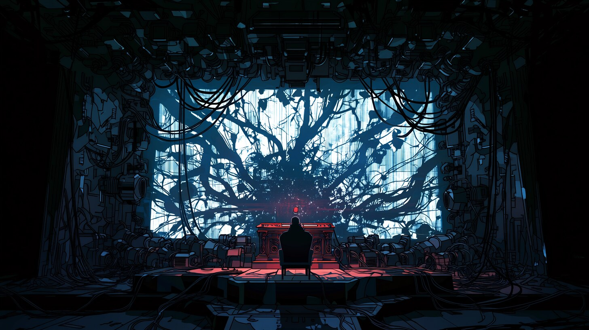
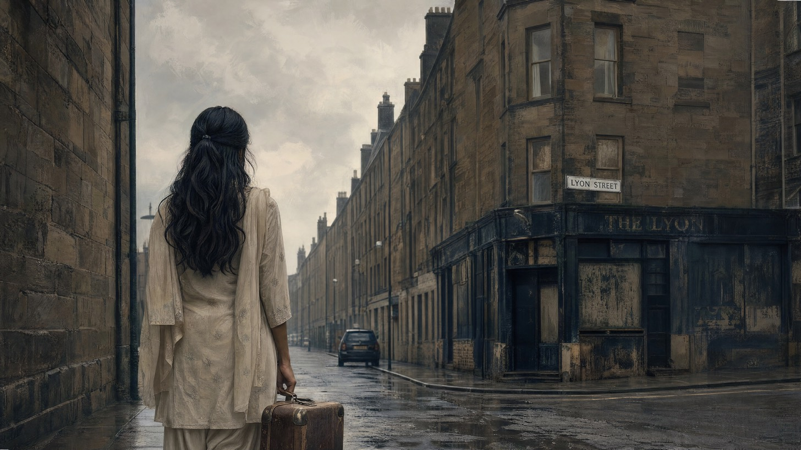
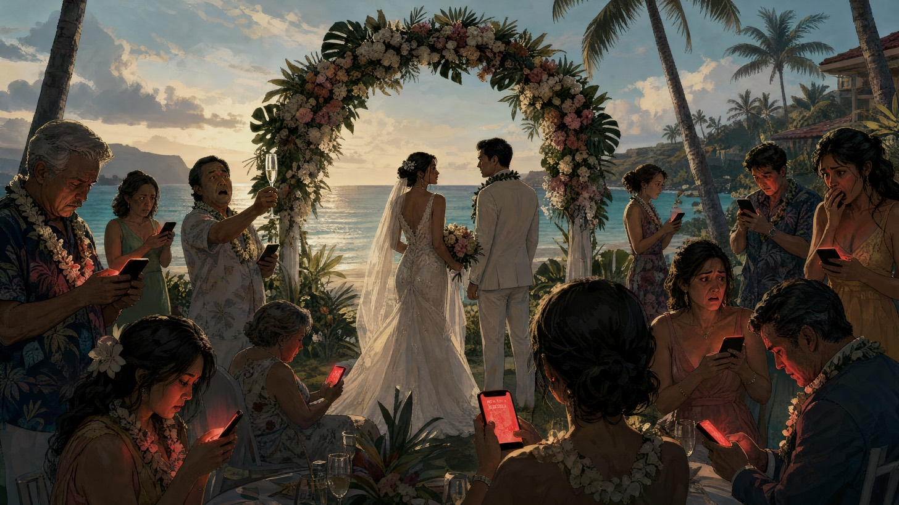
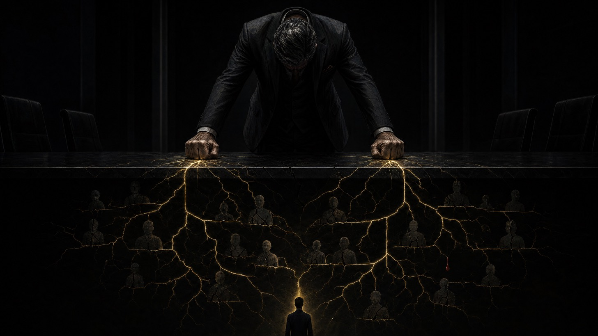

Stories

Animated Pilot
Icarus
Sci-Fi
Animated Pilot
Icarus
An outcast teenager becomes the unlikely leader of an alien universe on the brink of collapse. She didn’t ask for the job — and they didn’t ask for her.

Novel
Lyon Street
Biopic
Novel
Lyon Street
A teenage girl arrives in a foreign country barely speaking the language. She finds a close community of others like her, and together they make their way in a new world.

Feature Screenplay
Bombshell
Comedy
Feature Screenplay
Bombshell
A destination wedding, a perfect sunset, and one piece of news that reaches every phone at the same moment. There is suddenly no reason left to be polite.

Feature Screenplay
God has No Family
Thriller / Sci-Fi
Feature Screenplay
God has No Family
A man who has reached the top of everything sits alone with the arithmetic of how he got there. Far below him, one light is still on.

Feature Screenplay
Nostradamus
Romantic Comedy
Feature Screenplay
Nostradamus
A man in a cabin in the woods, a film crew on the lawn, and several million people waiting on what he says next. Falling for someone was not in the forecast.